Chapter 24 — Petroleum Production
In 2010 the world averaged about 73.6 million bbl/d of oil. The U.S. still had the most producing wells on Earth—just over a million in 2008—but the average U.S. oil well made only ~10 bbl/d. A petroleum engineer designs how the well is drilled, tested and completed. A reservoir engineer owns the field after that: how fast you produce, what you inject, when you stimulate, when you quit. This chapter is that job.
Learning goals
- Separate tubing, casing, flowing and shut-in bottomhole pressures—and what drawdown means.
- Read a decline curve (IP, stripper, economic limit) and how drive type shapes it.
- Explain bypassing, coning/cresting, and why rate is not only an economics choice.
- Outline acidizing vs hydraulic fracturing stages (pad, slurry, backflush) and brine/gas disposal options.
Well and reservoir pressures
Tubing pressure is the fluid inside the tubing (the gauge on the tree). Casing pressure is the fluid in the casing–tubing annulus. They are not the same number and a change in one with the other quiet is a diagnostic. Bottomhole pressure is measured at the pay, either flowing (well open) or shut-in / static after the well has sat closed long enough to stabilize—often 24 hours. Drawdown is shut-in minus flowing: the price, in psi, you pay to move fluid. Virgin / initial / original pressure is the reservoir before anyone produced a barrel. After that, shut-in bottomhole pressure is how you watch the tank empty.
A pressure bomb (~6 ft metal tube on wireline) carries a sensor, a clock and a chart of pressure versus time; temperature can ride a similar tool. An electronic gauge on conductor line does the same job with a cleaner file.
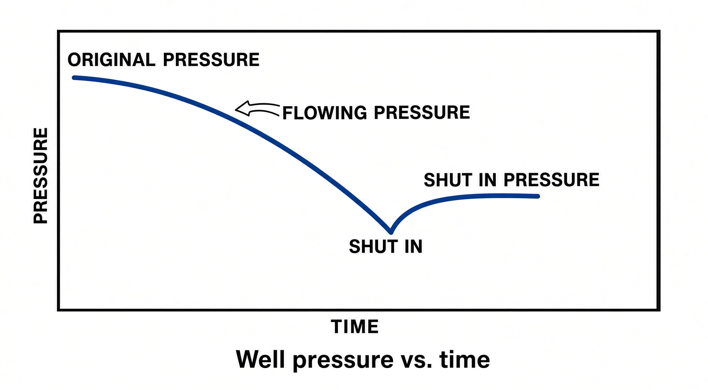
Well testing
Tests exist to pick a rate that makes money without wrecking the reservoir. The operator, a tester or a service company runs them with kit already on site or with a portable spread.
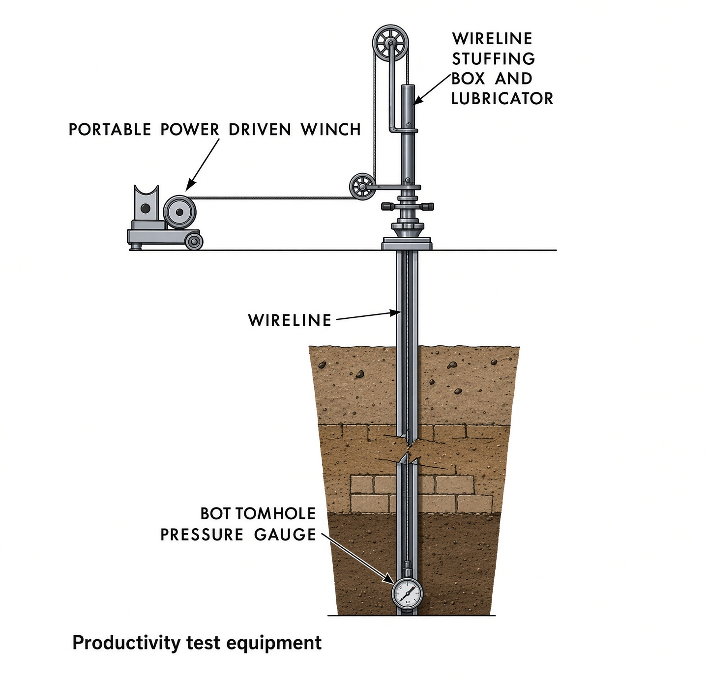
Potential test: after completion (and sometimes again later, sometimes required by the state), how much gas and oil the well can make in 24 hours, using the separator and tanks that are already there. Productivity test: portable gear measures shut-in bottomhole pressure, then the same point at several stabilized rates—from that you calculate absolute open flow and the highest rate that does not damage the rock. On a pad with a central plant, production tests split the battery so you know this well’s oil, water, gas, GOR and flowing tubing pressure—or, on gas wells, gas, condensate, water, tubing pressure and CGR.
Pressure-transient work watches pressure change, not just a number: drawdown (shut-in, then open and record the fall), buildup (flowing, then shut in and record the rise), multirate / four-point (flowing pressure at several stable rates). Deliverability is how much the reservoir will give you at a given flowing bottomhole pressure. AOF is the theoretical rate if bottomhole pressure were zero—calculated, never measured. PI is drawdown (psi) divided by rate (bbl/d); land wells are often >0.1, offshore >0.5. IPR is the same plot with reservoir drive, rising GOR and changing relative perm folded in. Gas wells add a backpressure test: shut-in plus several stable flowing pressures to get deliverability.
Cased-hole logs
When a zone is dead you either P&A or hunt for another pay behind pipe. Only GR and neutron porosity work well through casing. A pulsed-neutron log fires neutron pulses and reads the returning gamma rays; it can tell gas/oil from water and is the usual tool for “is there still a reservoir out there?”
Production logs
These go into a live well, on wireline through tubing or on a tubing string, because something is wrong. A tracer log spots a radioactive slug and follows it with GR—where fluid is moving, including behind pipe. A continuous flowmeter is a propeller versus depth; a packer flowmeter seals the hole so all the flow goes through the meter. A noise log is a microphone: flow into the well makes sound; frequency separates liquid from gas. A temperature log is run after the well has sat so the hole is quiet—gas entering expands and cools; that cold streak is the entry. A manometer is pressure at one depth; a gradiometer is a pressure-gradient profile. A water-cut meter is how wet the stream is. A collar log finds casing collars so you know exactly where you are; paired with GR it is how you aim the next perforating gun.
Decline curves
Rate versus time for a well or a field. Pressure falls, rate falls. IP is the first 24 hours and is usually the peak. When rate is barely worth the opex the well is a stripper: in the U.S., <10 bbl/d of oil over a year, or 60 Mcf/d of gas at max rate, with a tax break attached. In 2007 those wells were ~77% of U.S. oil wells, ~2 bbl/d each, and still ~16% of U.S. oil. Economic limit is the day cost equals net revenue—depth, water cut, location. Then you P&A or start improved recovery. Most wells are built for 15–20 years.
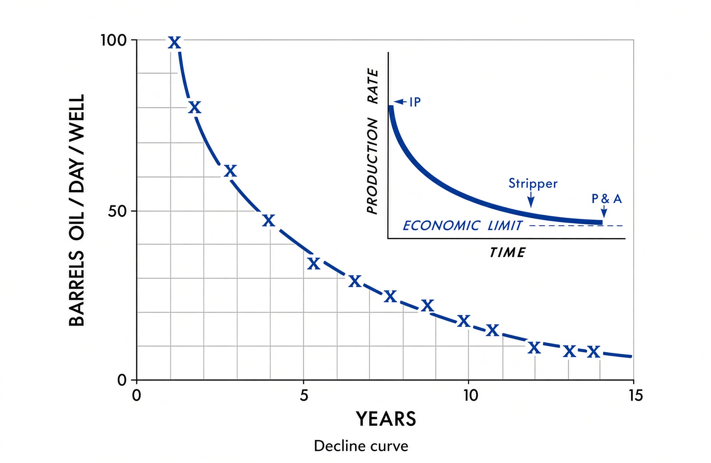
Shape of the curve is the drive from Chapter 9 wearing a watch: solution-gas is a steep cliff; water drive is almost flat for years; gas-cap expansion is in between. Tight rock with natural fractures (Spraberry, Barnett) has its own shape: a high IP while the fractures dump, then a sudden drop, then a long skinny tail while matrix leaks slowly into those same fractures—why shale wells still produce years after the headline rate is gone.
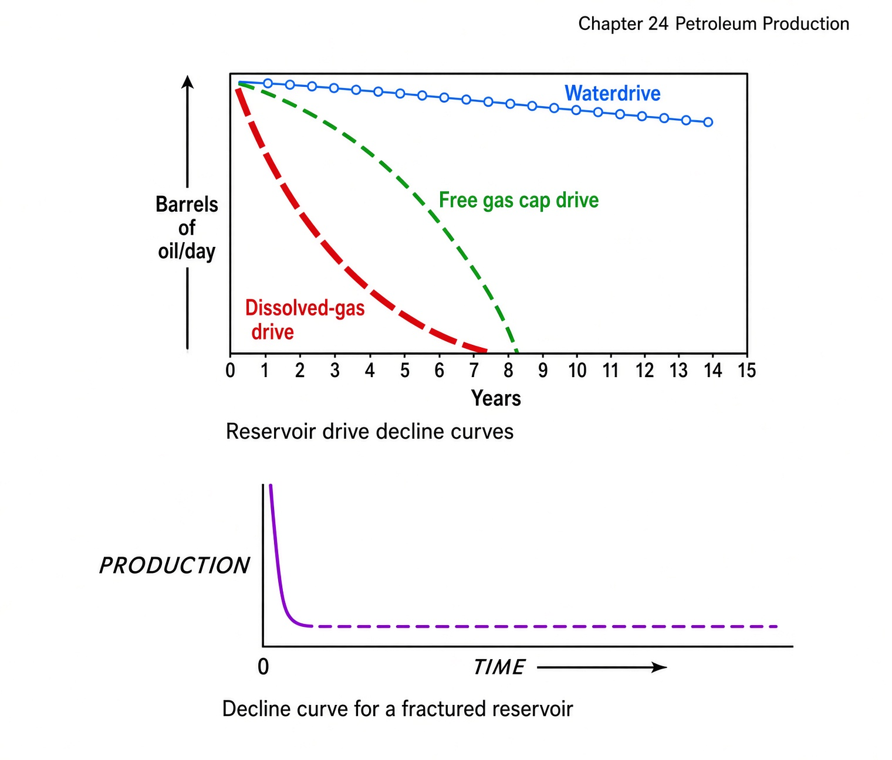
Bypassing and coning
Fast production pays the AFE back sooner. Heterogeneous rock punishes that instinct. In a water-drive reservoir, water rushes into the permeable streaks and bypasses oil sitting in tighter pockets—that oil is then sealed off from the wells you already have. Slower rate lets the tight rock drain before the water locks it.
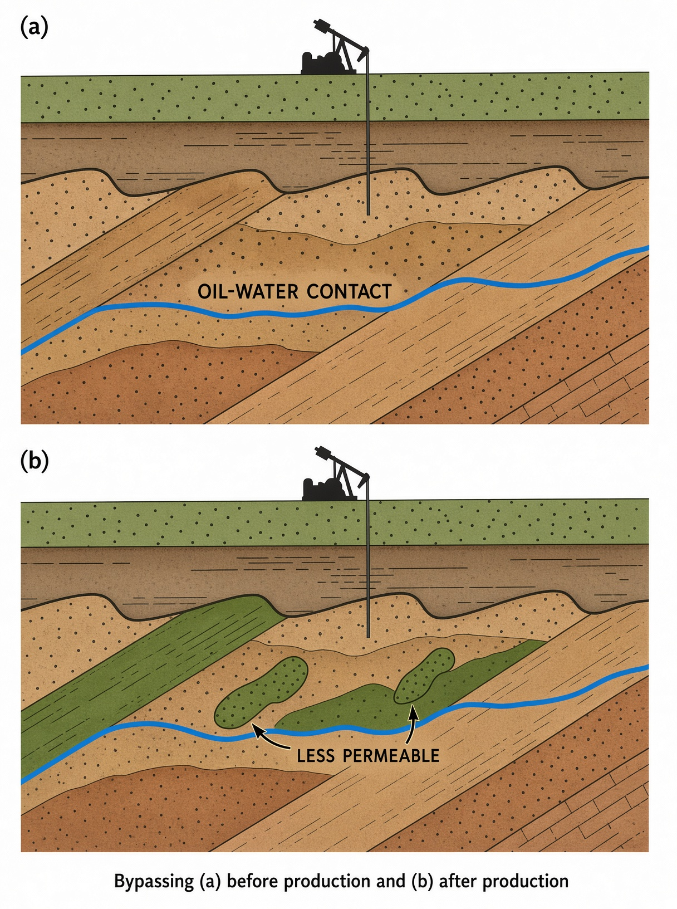
Coning is the contact itself being sucked: OWC up into the well on bottom water, GOC down into the well on a gas cap. It can ruin the completion. A horizontal stays in the oil column and makes coning harder; if it still happens on a lateral it is called cresting.
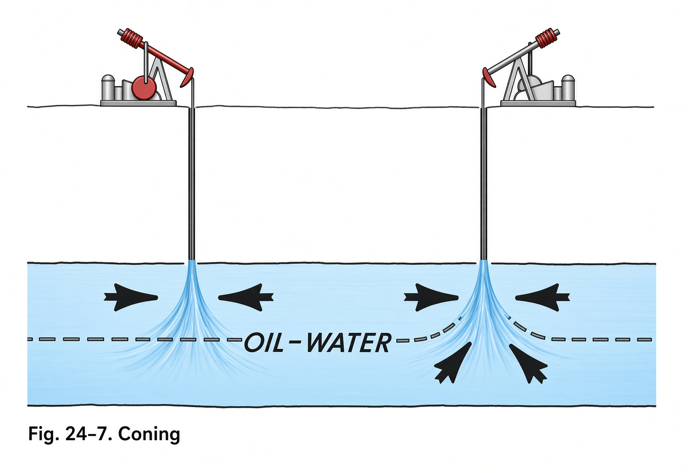
Cycling
In a retrograde-gas reservoir, dropping pressure drops condensate out in the rock. That liquid coats grains and you will not get it back. Cycling strips NGLs at surface and injects the dry gas back through injection wells so reservoir pressure never falls through the dew point. Saturated oil fields put that gas into the cap; undersaturated fields put it into the oil column.
Well stimulation
When the well will not give what the rock should, you stimulate: acid, old-school explosives, or frac.
Acidizing
Acid is pumped to dissolve limestone, dolomite, or calcite cement in a sandstone. HCl for carbonates, HF (or HCl+HF “mud acid”) for sandstones; acetic/formic when the hole is too hot for HCl. An inhibitor keeps the acid from eating casing and tubing. A sequestering agent stops iron gels from plugging pores. Matrix acidizing stays below frac pressure and just enlarges existing pores. Fracture acidizing is pumped hard enough to split the rock and etch the faces. Spent acid, dissolved rock and fines come back on backflush. The same treatment as a light “wash job” is how you treat skin on the borehole.
Explosive fracturing
From the 1860s to the late 1940s the stimulation tool was a tin torpedo of nitroglycerin, run to bottom and shot by a shooter. It left a cave that you cleaned out and completed open-hole. It worked. It also killed people. Hydraulic fracturing replaced it.
Hydraulic fracturing
Developed in 1948; by 2010 more than 60% of U.S. completions were fraced. A service company pumps a large volume of fluid hard enough to split the pay—in open hole or through perforations. Common fluid is water plus polymers (a gel). Oil-based or N₂/CO₂ foam is used when you cannot afford filtrate damage. About 0.5% of the volume is additives in the same family as mud chemicals.
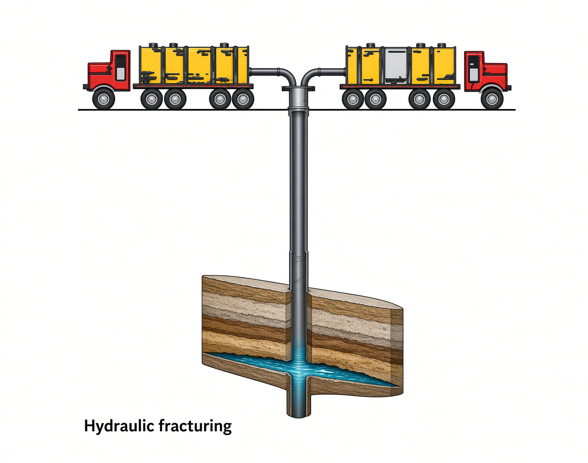
Three stages: pad—fluid only, to start the crack; slurry—same fluid plus proppant (well-sorted quartz sand; ceramic or alumina if high pressure) to grow the crack and leave it packed; backflush—you recover only ~10–30% of the fluid. Crosslinked gel is thick enough to carry sand; a breaker later thins it so backflush can move it. Medium-to-hard (brittle) rock holds a pack; unconsolidated sand does not—the proppant embeds and the crack heals.
On location: frac tanks, a blender, pump trucks into a manifold, sometimes a wellhead isolation tool so the tree does not eat 10,000 psi of sand. The frac van runs the job. Size is barrels of fluid and pounds of sand. A “normal” modern job in the book is ~60,000 gal and ~100,000 lb of sand; a massive job is roughly >1 million gal and >5 million lb. A frac pack uses thick gel and a lot of sand to make short, fat fractures—common offshore. Result: rate up 1.5–30× (biggest lift in tight rock), EUR up ~5–15%. The failure mode that matters is fracturing into water and drowning the well.
Disposal of oilfield brine and solution gas
Associated gas leaves the separator at atmospheric pressure. Compressing it to pipeline spec may not pay. Flaring used to be the answer; it is illegal in most places now and survives only when there is no other option or during a test. Better: strip NGLs and inject the dry gas back—pressure maintenance—into the cap (saturated field) or the oil column (undersaturated). Lease gas can also go to the landowner or to the engine on the beam pump.
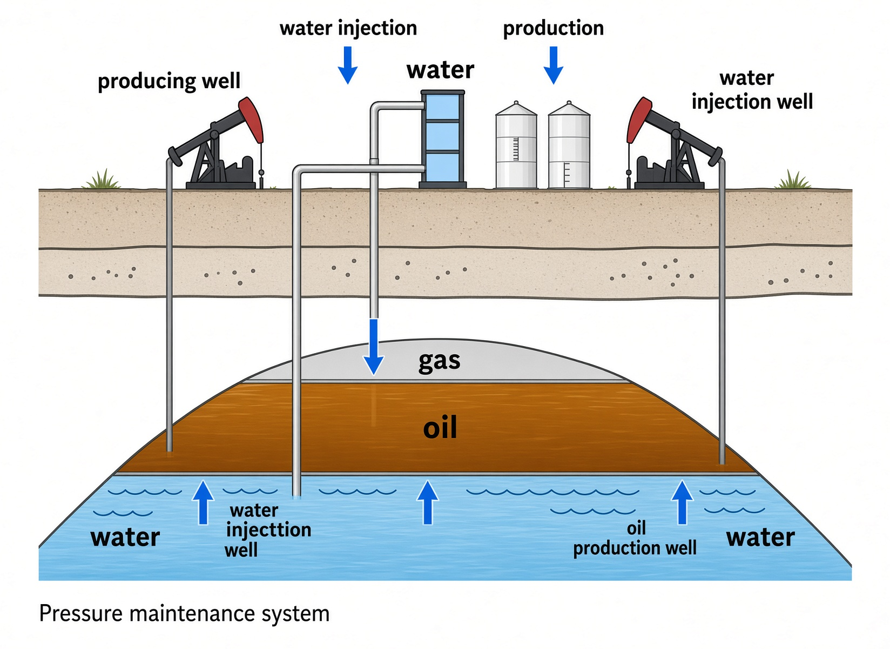
Brine from the same separators is injected below the OWC in that same pressure-maintenance system if you have an injection well. If not, it sits in a steel or fiberglass saltwater tank. A permitted disposal well puts it into a reservoir that is already saline, that will not leak into freshwater, and that can take the extra pressure. No disposal well means evaporate in an open tank and, when it is full, pay a water hauler to a commercial well.
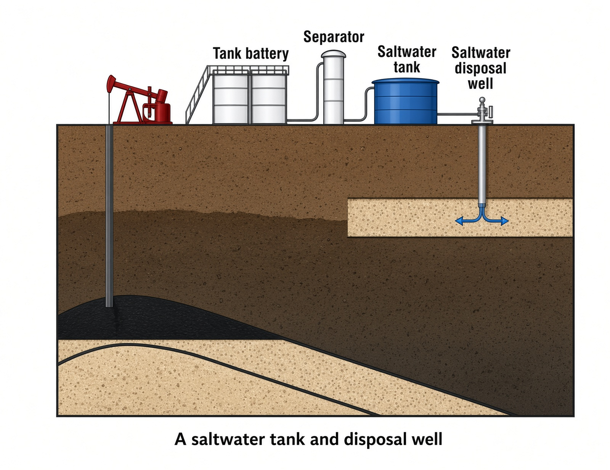
Surface subsidence
Produced fluid is supposed to be replaced by water from the sides and bottom. If it is not, the reservoir compacts and the ground falls. Wilmington (Long Beach) has made a 29-ft bowl since the 1940s; much of the city sits below sea level and lives behind a dike after a huge waterflood stopped the sink. Ekofisk chalk compacted enough that casings collapsed and the boat dock went underwater; in 1987 they cut the platform legs, jacked the deck and spliced extensions.
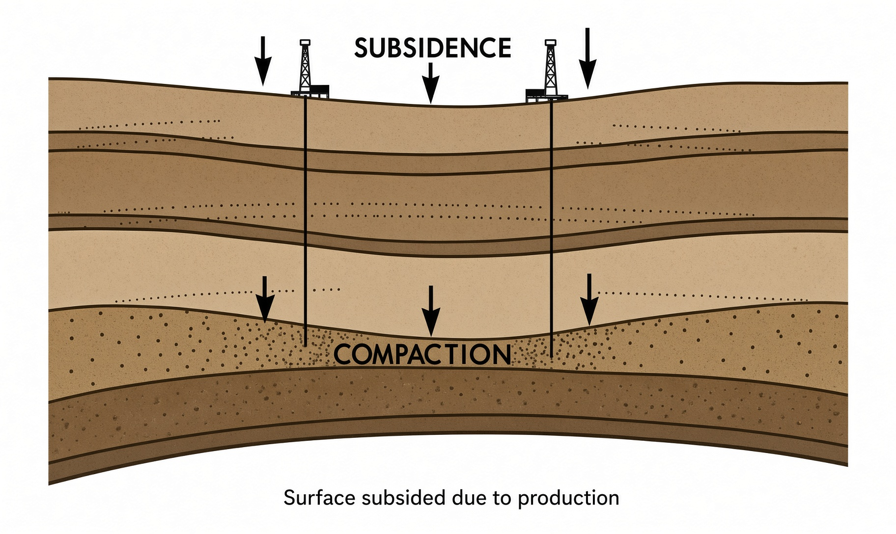
Corrosion
Metal plus air, water, seawater, oxygen, CO₂ (sweet) or H₂S (sour) is chemistry you pay for. Crude’s total acid number (mg KOH/g) is a proxy for how mean the oil is. Paint the iron you can see. Inhibitors batch or drip into the annulus and leave a film on tubing and surface kit. Flowlines can take a concrete lining; injection/disposal tubing often takes plastic. Big steel—pipelines, jackets—gets cathodic protection, an imposed charge so the structure is not the anode that dissolves.
Production maps
A well-status map is the daily picture: every well, oil and water rate and GOR on producers, injection rate, pressure and cumulative water on injectors—problem wells show up as the odd bubble. A cumulative map is life-to-date oil, gas and water by well. A bubble map draws a circle whose radius is IP or cumulative of oil, gas or water—you see who drained what, and where the flood has not arrived.
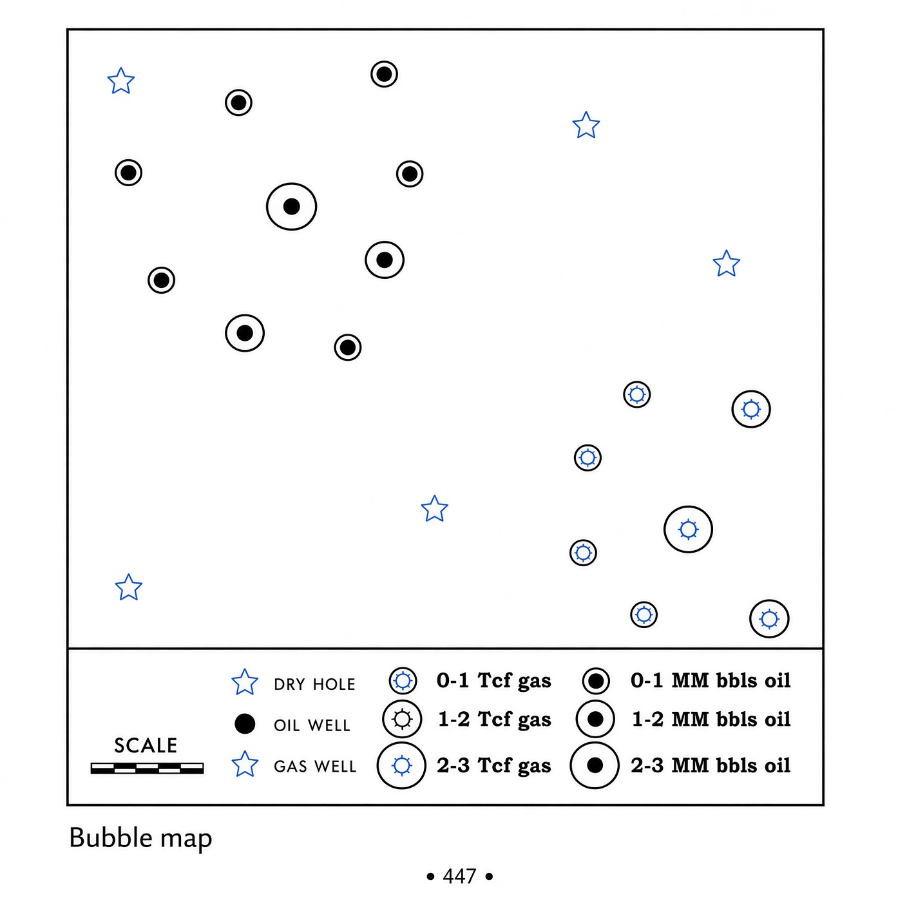
Stranded gas
Gas with no pipe to a buyer—West Siberia, northwest Canada, Alaska, the Middle East. You turn it into a liquid so a ship can move it. LNG: methane chilled to –269°F / –167°C, ~1/645 the volume of the gas, hauled in special tankers. North Dome / South Pars (Qatar–Iran) is the world’s largest conventional gas field and Qatar is the largest LNG exporter. Gas-to-liquids: methane plus air to synthesis gas (CO + H), then a second reactor to synthetic crude.
The production chain for your notes: pressures and tests tell you what the well can do; decline, bypassing and coning tell you what happens if you pull too hard; acid and frac are how you open the rock you just cased and perforated in Chapter 19; injection of gas and brine is how you put pressure back. Frac data is a different stream from drilling WITSML—treating pressure, slurry rate, proppant concentration, stage—but the reason the job exists is this chapter plus the tight-rock story.
Key terms
- Drawdown
- Shut-in bottomhole pressure minus flowing bottomhole pressure.
- AOF / PI / IPR
- Absolute open flow; productivity index; inflow performance relationship.
- Decline curve
- Rate vs time from IP to economic limit.
- Stripper
- Very low-rate well near (or past) economic interest.
- Bypassing / coning
- Water taking permeable paths; contact sucked into the well.
- Acidizing
- Matrix or fracture acid to dissolve rock or cement skin.
- Hydraulic fracture
- Pad → slurry with proppant → backflush to open and prop the pay.
- Bubble map
- Map with symbols sized by rate or cumulative production.